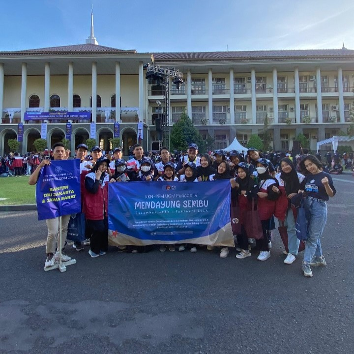
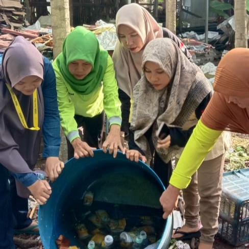
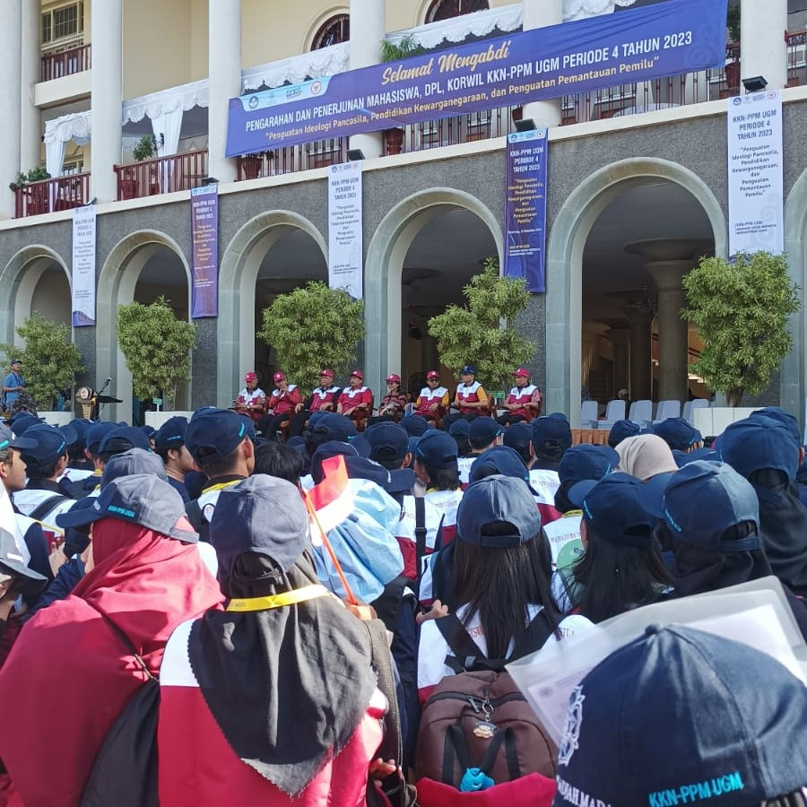

Hal Menarik Mengenai RW 001, Pulau Tidung
Tempat di mana keindahan dan daya tarik RW 001, Pulau Tidung, menjadi pusat cerita yang meliputi penginapan, destinasi wisata, beserta produk unggul dari RW 001. Mari kita jelajahi hal-hal menarik yang membuat RW 001 begitu istimewa di tengah pesona Pulau Tidung!.
Tentang KKN-PPM UGM Mendayung Seribu
Selamat datang di blog resmi kami, di mana kita akan merinci perjalanan luar biasa KKN-PPM UGM yang bertajuk "Pengelolaan Sumber Daya Kawasan Kepulauan Berbasis Blue Economy." Bersama-sama, mari kita mengeksplorasi bagaimana upaya ini mendukung keserasian ekologi dan keberlanjutan di Kabupaten Administrasi Kepulauan Seribu, DKI Jakarta.
-

Kedatangan
Perkenalan
18 Desember 2023: Kedatangan dan Perkenalan Awal Pada tanggal ini, tim KKN-PPM UGM tiba di Pulau Tidung dengan semangat yang penuh antusias. Mereka segera terlibat dalam perkenalan dengan masyarakat setempat dan melakukan observasi mendalam terhadap lingkungan sekitar. Langkah awal ini bertujuan untuk memahami kebutuhan dan potensi lokal, menjadi dasar untuk merancang program kerja yang akan dilaksanakan.
-

Pelaksanaan
Pelaksanaan Program Kerja
Dengan observasi yang teliti, tim KKN-PPM UGM memulai pelaksanaan program kerja yang telah mereka rancang dengan matang. Aktivitas-aktivitas pemberdayaan masyarakat, pelestarian lingkungan, dan promosi blue economy dilakukan secara terintegrasi untuk menciptakan dampak positif yang berkelanjutan. Kegiatan ini melibatkan partisipasi aktif masyarakat setempat, menciptakan ikatan erat antara tim KKN dan komunitas Pulau Tidung.
-

Penarikan
Penarikan Tim dan Capaian Bersama
Seiring berjalannya waktu, tanggal 5 Februari 2024 menjadi momentum penarikan tim KKN-PPM UGM. Saat ini, tim menyusun laporan hasil kerja mereka dan merayakan capaian bersama dengan masyarakat Pulau Tidung. Program kerja yang dijalankan telah menciptakan keberlanjutan dan keserasian ekologi, membangun fondasi bagi masa depan yang lebih baik untuk Pulau Tidung. Sebuah perpisahan yang sarat dengan harapan dan penghargaan atas kerjasama yang telah terjalin.
-
Be Part
Of Our
Story!
Supported By
Kegiatan ini disponsori oleh :
Bank BTN
Jasa Marga
KKN-PPM UGM
Terima Kasih dan Sampai Jumpa di Petualangan Berikutnya